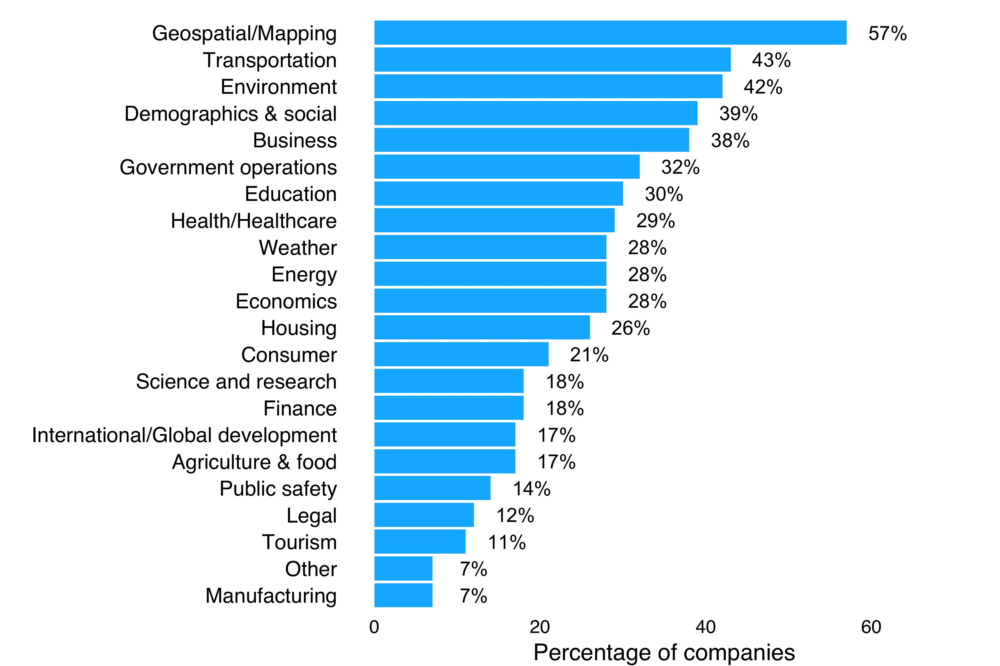

Open data that drives business
Uses of government open data
Uses of non-government open data
What types of data do companies use most?
How to cite
UK companies are using government and non-government open data from a wide range of sectors
The UK is ranked top of 86 countries by the Open Data Barometer, which measures a country’s readiness to secure benefits from open data, its publication of key datasets and evidence of emerging impacts from open government data.
The UK’s central repository of public sector open data, data.gov.uk, contains nearly 15,000 datasets published with an Open Government License. Substantial open data resources are also published by non-government sources, such as nonprofits and community groups.
Uses of government open data
A large proportion (70%) of companies that responded to our survey use open data provided by government.
Survey respondents were also asked to list the government datasets used in their companies. In total, 25 different open data sources were named, spanning central and local government and other public sector bodies, with numerous examples given of specific datasets. Many companies listed multiple datasets, with some stating that they used too many to list for the purposes of the survey. Appendix Table A3.1 summarises the survey responses on this topic.
Ordnance Survey (OS) was cited most frequently (27% of companies) as an open data source. OS is Britain’s national mapping agency and a member of the Public Data Group. It has operated as a government-owned company since 1 April 2015.
Companies also use open data related to local regions. Local and regional government (listed by 18% of companies) and the Department for Communities and Local Government, a ministerial department concerned with community policy (listed by 14% of the companies), are sources of open datasets that companies use recurrently.
Other sources of open government data listed frequently include the Department for Transport and related bodies, the Office for National Statistics (ONS) and Companies House, which were listed by 20%, 18% and 14% of respondent companies respectively.
Uses of non-government open data
Almost half (49%) of the surveyed companies use open data from non-government sources such as businesses, nonprofits and community projects.
The companies we surveyed were asked to list the datasets they use from non-government sources. Appendix Table A3.2 summarises the responses. Together, they named 14 different sources, and listed a variety of different datasets within them.
Use of open geographic data is particularly popular amongst those companies that listed specific open data sources in their responses. OpenStreetMap, an openly licensed map of the world created by volunteers – with extensive annotations available as open data – is used by 24% of these companies.
Companies also use open data from various non-governmental, international projects, generally developed by communities of members seeking to make large quantities of data available for widespread use. Projects such as DBpedia, geonames, Wikimapia, p-lei.org, DMOZ, OpenCorporates and OpenCharities are all cited as sources of open data used by the companies.
Transport-related data sources are also popular. These include Traveline, the Association of Train Operating Companies (ATOC), the General Transit Feed Specification (GTFS), the National Aeronautics and Space Administration (NASA) and the National Air Traffic Services (NATS).
We can identify how companies use a combination of government and non-government open data by looking at those that responded to both of the above questions. Appendix Table A3.3 summarises these combined responses.
The most number of respondent companies (39%) use open data from both government and non-government sources, although only a tenth (10%) are using non-government open data exclusively. This may indicate the importance of the role of government in the open data ecosystem, as a publisher of data to support development of new products and services, and as the driver of policy interventions related to open data and innovation.
It is important to note that around a fifth of respondents (21%) stated that they were not using data from either type of source, which could represent those companies that solely provide infrastructure and/or publish open data and do not make use of it themselves.
What types of data do companies use most
When describing the open data they use, companies were able to select multiple sectors. Their responses show that data from a wide range is being used.

Figure 3.1 - Responses to the question "What types of open data does your company use?" (n=76, multiple responses allowed). See Appendix Table A3.4 for a table of responses including frequencies.
Geospatial/mapping open data is used by more than half (57%) of all respondent companies. Several other types of open data are used by more than a third of respondents, namely transportation (43%), environment (42%), demographics & social (40%) and business (38%) data.
Respondent companies often use open data from multiple sectors. In fact, 79% of companies use data related to more than one sector and 14% of them use data related to more than 10. The mean and median number of data types by sector used by companies is 4.75 and 4 respectively. These usage statistics, combined with detailed statements made by the companies interviewed, suggests that commercial value can be drawn from combining open datasets.
"How do we make money? Well, people are engaging with us to build systems that use [...] this [Environment Agency] data or mix it with other datasets, to come up with something useful. So it’s become quite a big part of our business."
- Rod Plummer, Shoothill
"The data was siloed. You couldn't search across multiple company registers, you couldn't search for directors across multiple jurisdictions and you couldn't combine the information from those registers together. We felt that the need was essentially to create a single unified interface to all of this data, allowing it to come together. Insight generally comes from combining more than one dataset together. As each dataset becomes available as open data, the opportunities for taking that and coming up with completely new business models, and new ideas about what’s possible, are tremendous."
- Chris Taggart, OpenCorporates
"Individual datasets? Yes they are accessible, but individual datasets by themselves don't really add that much value. It's only when you combine it, you clash things together, that you start seeing some value coming out of it."
- Clifford McDowell, Doorda
Companies could select 'other' for data they felt was not covered by the prescribed list of sectors, and to name those they used. They listed sectors like '3D', 'crime', 'Internet of Things', 'jobs data' and 'political'. These responses not only further reflect the wide breadth of open data use by sector, but also open data use in combination with other emerging technologies. For example, the development of widespread 3D printing capabilities and the growth of Internet of Things networks will raise new questions about the potential of open data. Companies in the UK are beginning to address these questions.
"You could have a situation where we are building a silo of data around, say, Camden or something, but actually there are so many use cases that need to be fulfilled. If you don't have an easy data exchange, the industry is not going to grow. The reason why the web has taken off is because we got rid of the silos. I think for Internet of Things the same thing needs to happen in order to [have the same] explosion."
- Yodit Stanton, OpenSensors.io
The other sections in this report focus on the range of companies investing in open data, business strategies, the challenges they face and some real-life company examples of open data innovation.
How to cite
Please cite this report as: Open Data Institute (2015) Open data means business: UK innovation across sectors and regions. London, UK. Available at open-data-means-business-uk-innovation-sectors-regions
PREVIOUS PAGE / NEXT PAGE